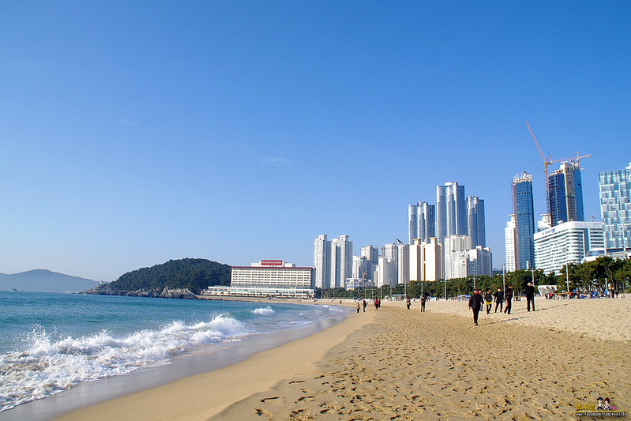
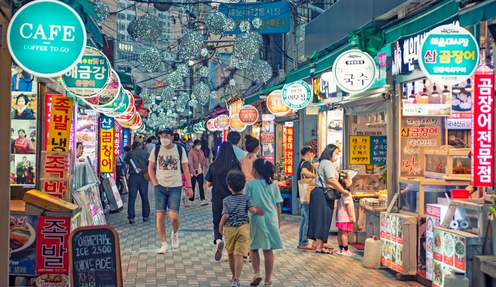
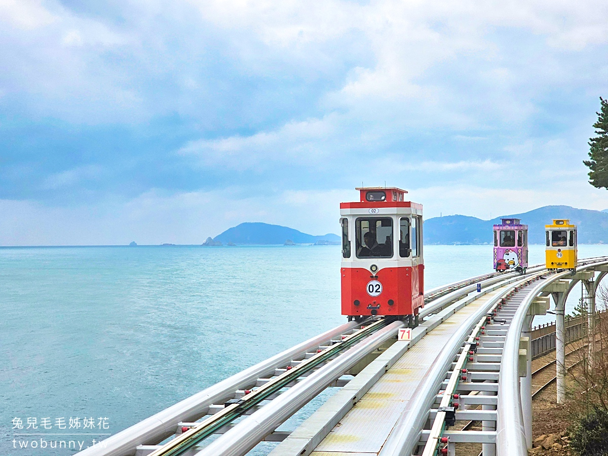
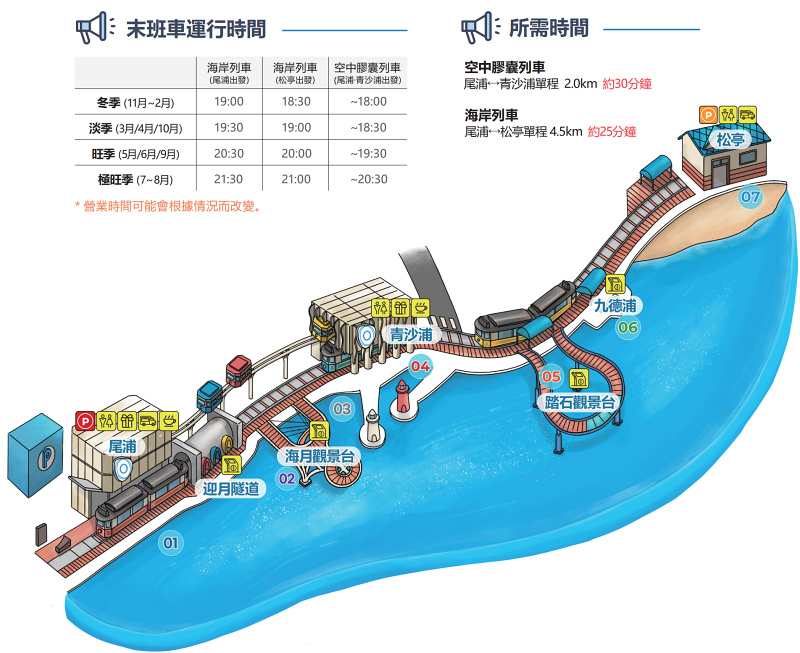
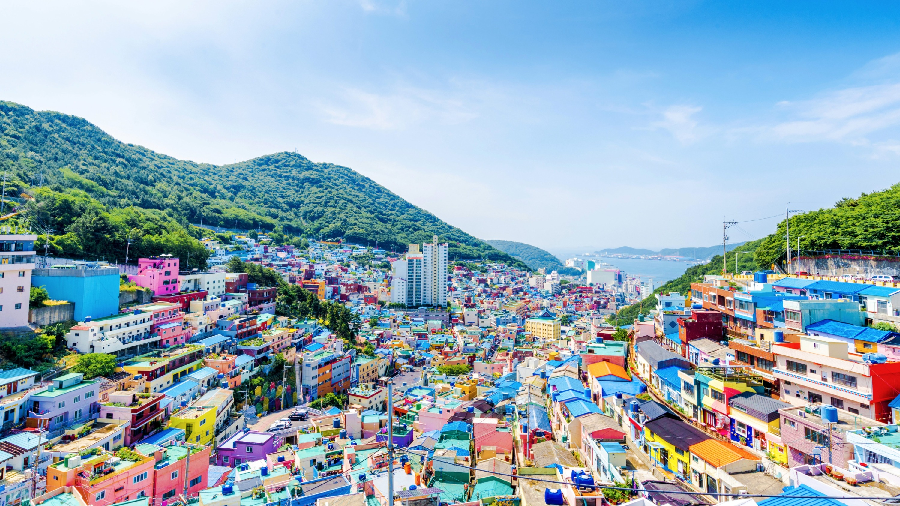
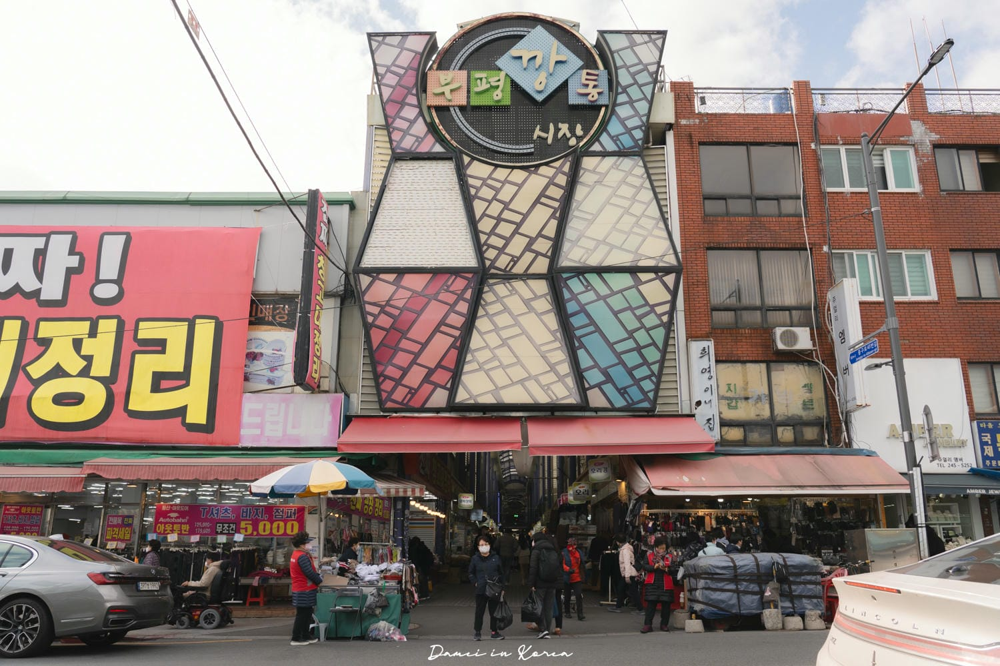
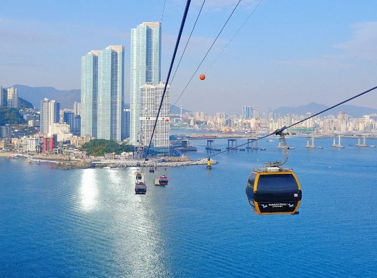
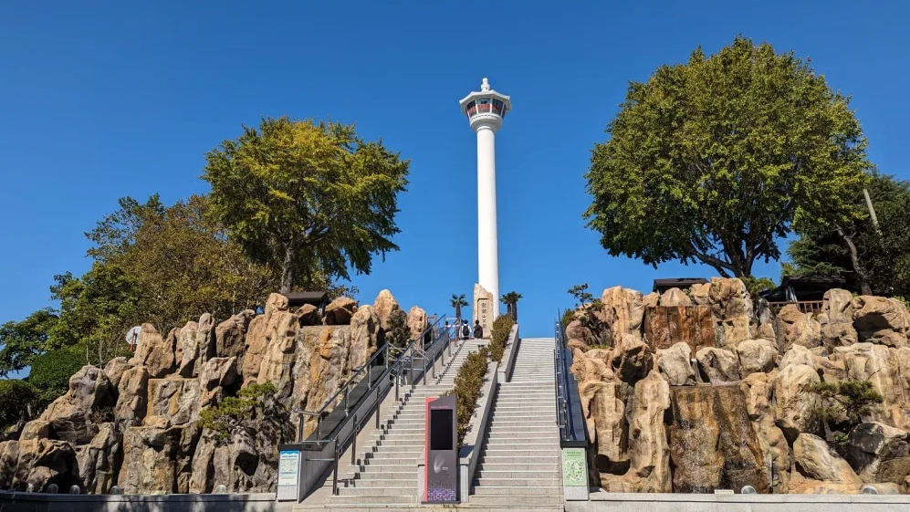
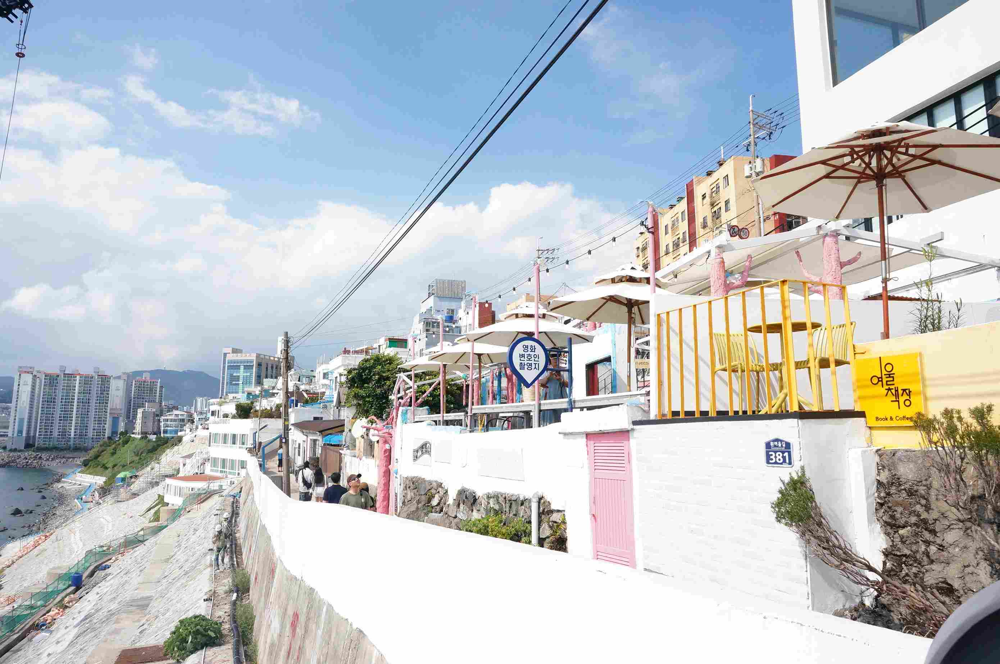

釜山介紹
釜山是南韓第一大港口城市，擁有絕美海景與豐富美食。本行程專為老人與小孩設計，兼顧舒適與精彩景點，包含海雲台、機張、南浦洞及影島等熱門區域。
行前準備
-
[cite_start]
- 航班：高雄-釜山 (17:05-20:35) / 釜山-高雄 (12:00-14:00) [cite: 1] [cite_start]
- 工具：Naver Map、papago、Kakao T (叫車)、海雲台天空膠囊預約 [cite: 10]
- 提醒：下載 T-Money 儲值卡 App
第一天：抵達與海雲台
-
[cite_start]
- 入住海雲台飯店 [cite: 2]
 [cite_start]
[cite_start]- 晚餐：海雲台傳統市場 或 水邊最高豬肉湯飯 [cite: 3]
-  [cite_start]
- 逛街：OLIVE YOUNG (至23:00)、大創 (至22:00) [cite: 4]
第二天：海岸線之旅
-
[cite_start]
- 09:30 搭乘天空膠囊 (尾浦 ➔ 青沙浦)
-  [cite_start]
- 10:00 青沙浦收集：平交道、雙胞胎燈塔、踏石展望台
-  [cite_start]
- 12:30 海東龍宮寺 (含午餐)
 [cite_start]
[cite_start]- 14:00 Skyline Luge 斜坡滑車
 [cite_start]
[cite_start]- 16:00 樂天世界冒險樂園 或 Outlet (晚餐)
 [cite_start]
[cite_start]- 20:00 Busan X the SKY 看夜景

第三天：SPA與遊艇派對
-
[cite_start]
- SEA LIFE 釜山水族館 ➔ 新世界 SPA LAND 汗蒸幕
 [cite_start]
[cite_start]- 必看：廣安里海水浴場 ➔ 搭遊艇看煙火無人機秀

第四天：文化村探險
-
[cite_start]
- 甘川洞文化村 (拍小王子、彩色屋頂) [cite: 26, 32]
-  [cite_start]
- 12:30 富平罐頭市場午餐
-  [cite_start]
- 15:00 松島海上纜車 ➔ 松島天空步道
- 
- 15:00 THRILL ON THE MUG! 喝咖啡
- 18:30 BIFF 廣場 ➔ 釜山塔煙火秀 (19:00開始) [cite: 46, 49, 50]
- 
 [cite_start]
[cite_start]第五天：南浦洞與影島
-
[cite_start]
- 國際市場 [cite: 54, 56]
 [cite_start]
[cite_start]- 札嘎其市場 [cite: 54, 56]
 [cite_start]
[cite_start]- 15:00 影島大橋 ➔ 白淺灘文化村
- 
第六天：西面購物之旅
-
[cite_start]
- 10:00 田浦咖啡街
 [cite_start]
[cite_start]- 西面地下街 ➔ 西面商圈地面逛街
 [cite_start]
[cite_start]- 18:00 晚餐：吃韓牛

第七天：回程賦歸
-
[cite_start]
- 最後整理行裝 ➔ 前往機場 [cite_start]
- 航班：釜山 ➔ 高雄 (12:00-14:00)